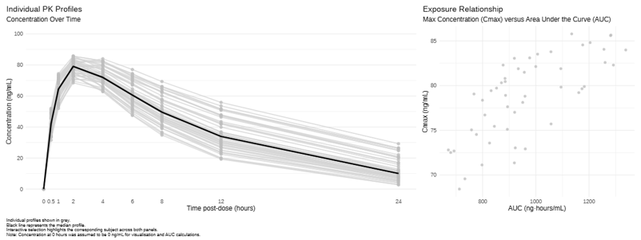
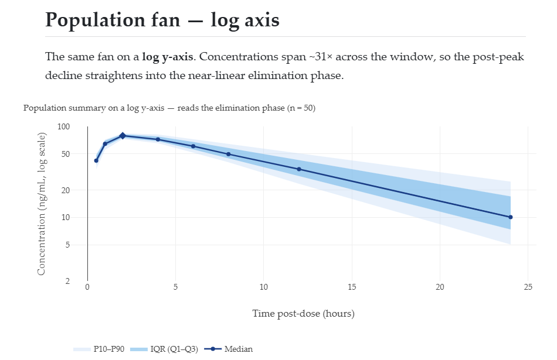

Pharmacokinetics (PK)
This month’s challenge used a simulated pharmacokinetic (PK) dataset. Each of 50 subjects received a single oral dose of an investigational drug, with plasma concentrations measured at 8 time points up to 24 hours post-dose. The dataset contained variables for subject, time post-dose and drug concentration.
The challenge was to use data visualisation to characterise the PK behaviour of the drug. There was no correct answer, but it was suggested that participants could explore individual PK profiles, summary trends, variability between subjects, or something else…
Two submissions were received for the challenge, both containing interactivity. Hence, they are best explored via the HTML files.

View the HTML file: Connected Interactive Plots

View the HTML file: Scroll Storytelling###############################################################################
# Load Required Packages
###############################################################################
library(readxl)
library(dplyr)
library(ggplot2)
library(ggiraph)
library(patchwork)
library(htmlwidgets)
###############################################################################
# Load Data
###############################################################################
pk <- read_excel("Simulated_PK_Data.xlsx") %>%
mutate(subject = factor(subject))
###############################################################################
# Add Pre-Dose Observations and Calculate Cmax Tmax and AUC
###############################################################################
predose <- pk %>%
distinct(subject) %>%
mutate(
time_hr = 0,
concentration_ng_ml = 0
)
pk <- bind_rows(pk, predose) %>%
arrange(subject, time_hr)
pk_summary <- pk %>%
group_by(subject) %>%
summarise(
Cmax = max(concentration_ng_ml),
Tmax = time_hr[which.max(concentration_ng_ml)],
AUC = sum(
diff(time_hr) *
(
head(concentration_ng_ml, -1) +
tail(concentration_ng_ml, -1)
) / 2
),
.groups = "drop"
)
###############################################################################
# Spaghetti Plots of Concentrations Over Time
###############################################################################
p1 <-
ggplot(
data = pk,
aes(
x = time_hr,
y = concentration_ng_ml,
group = subject,
order = time_hr,
)
) +
geom_line_interactive(
aes(
data_id = subject,
tooltip = paste0("Subject: ", subject)
),
colour = "lightgrey",
linewidth = 0.8,
alpha = 0.8
) +
geom_point_interactive(
aes(
data_id = subject,
tooltip = paste0(
"<b>", subject, "</b>",
"<br>Time: ", time_hr, " hours",
"<br>Concentration: ",
round(concentration_ng_ml, 1),
" ng/mL"
)
),
colour = "grey",
size = 2,
alpha = 0.8
) +
stat_summary(
aes(group = 1),
fun = median,
geom = "line",
colour = "black",
linewidth = 1.2
) +
scale_x_continuous(
breaks = c(0, 0.5, 1, 2, 4, 6, 8, 12, 24),
labels = c("0", "0.5", "1", "2", "4", "6", "8", "12", "24")
) +
scale_y_continuous(
limits = c(0, 100),
breaks = seq(0, 100, by = 20)
) +
labs(
title = "Individual PK Profiles",
subtitle = "Concentration Over Time",
x = "Time post-dose (hours)",
y = "Concentration (ng/mL)"
) +
theme_minimal(base_size = 12) +
theme(
plot.title.position = "plot",
panel.grid.major.x = element_blank(),
panel.grid.minor.x = element_blank()
)
###############################################################################
# Scatter Plot of AUC vs Cmax
###############################################################################
p2 <-
ggplot(
data = pk_summary,
aes(
x = AUC,
y = Cmax
)
) +
geom_point_interactive(
aes(
data_id = subject,
tooltip = paste0(
"<b>", subject, "</b>",
"<br>Cmax: ", round(Cmax, 1), " ng/mL",
"<br>AUC: ", round(AUC, 1), " ng·hours/mL",
"<br>Tmax: ", Tmax, " hours"
)
),
colour = "grey",
fill = "grey",
shape = 16,
alpha = 0.8,
size = 2
) +
labs(
title = "Exposure Relationship",
subtitle = "Max Concentration (Cmax) versus Area Under the Curve (AUC)",
x = "AUC (ng·hours/mL)",
y = "Cmax (ng/mL)"
) +
theme_minimal(base_size = 12) +
theme(
plot.title.position = "plot"
)
###############################################################################
# Combine Plots Using patchwork Package
###############################################################################
combined_plot <- p1 + p2 +
plot_layout(widths = c(2, 1)) +
plot_annotation(
caption = paste(
"Individual profiles shown in grey.",
"\nBlack line represents the median profile.",
"\nInteractive selection highlights the corresponding",
"subject across both panels.",
"\nNote: Concentration at 0 hours was assumed to be",
"0 ng/mL for visualisation and AUC calculations."
)
) &
theme(
plot.caption.position = "plot",
plot.caption = element_text(
hjust = 0,
size = 8,
)
)
###############################################################################
# Make Plots Interactive Using ggiraph Package
###############################################################################
interactive_plot <- girafe(
ggobj = combined_plot,
width_svg = 16,
height_svg = 6,
options = list(
# Hover Styling
opts_hover(
css = paste(
"stroke:#09B5CD;",
"opacity:1;",
"stroke-width:3;"
)
),
# Fade Everything Else
opts_hover_inv(
css = "opacity:0.15;"
),
# Allow Click Selection
opts_selection(
type = "single",
only_shiny = FALSE,
css = paste(
"stroke:#09B5CD;",
"opacity:1;",
"stroke-width:3;"
)
),
# Fade Everything Else
opts_selection_inv(
css = "opacity:0.15;"
)
)
)
###############################################################################
# Display Plot
###############################################################################
interactive_plot
###############################################################################
# HTML export
###############################################################################
interactive_plot$width <- "100%"
interactive_plot$height <- "950px"
saveWidget(
interactive_plot,
"interactive_pk_visualisation.html",
selfcontained = TRUE
)---
title: "Pharmacokinetics Scroll Story"
subtitle: "Wonderful Wednesdays • 2026-06-10 challenge"
format:
html:
toc: true
toc-depth: 2
smooth-scroll: true
code-fold: true
page-layout: full
embed-resources: true
execute:
echo: false
warning: false
message: false
---
```{r}
library(readxl)
library(dplyr)
library(ggplot2)
library(plotly)
library(htmltools)
data_file <- file.path("..", "..", "..", "data", "2026", "2026-06-10", "Simulated_PK_Data.xlsx")
if (!file.exists(data_file)) {
stop(paste0("Data file not found: ", normalizePath(data_file, winslash = "/", mustWork = FALSE)))
}
pk_data <- readxl::read_excel(data_file) |>
dplyr::rename_with(tolower) |>
dplyr::mutate(
subject = as.character(subject),
time_hr = as.numeric(time_hr),
concentration_ng_ml = as.numeric(concentration_ng_ml)
) |>
dplyr::filter(!is.na(subject), !is.na(time_hr), !is.na(concentration_ng_ml), concentration_ng_ml > 0) |>
dplyr::arrange(subject, time_hr)
summary_by_time <- pk_data |>
dplyr::group_by(time_hr) |>
dplyr::summarise(
q25 = quantile(concentration_ng_ml, 0.25),
median = median(concentration_ng_ml),
q75 = quantile(concentration_ng_ml, 0.75),
p10 = quantile(concentration_ng_ml, 0.10),
p90 = quantile(concentration_ng_ml, 0.90),
.groups = "drop"
)
normalized_profiles <- pk_data |>
dplyr::group_by(subject) |>
dplyr::mutate(
cmax = max(concentration_ng_ml),
concentration_norm = concentration_ng_ml / cmax
) |>
dplyr::ungroup()
normalized_summary <- normalized_profiles |>
dplyr::group_by(time_hr) |>
dplyr::summarise(
median_norm = median(concentration_norm),
.groups = "drop"
)
# --- Per-subject peak behaviour (Cmax / Tmax) ---
subject_peaks <- pk_data |>
dplyr::group_by(subject) |>
dplyr::arrange(time_hr, .by_group = TRUE) |>
dplyr::filter(concentration_ng_ml == max(concentration_ng_ml)) |>
dplyr::slice(1) |>
dplyr::ungroup() |>
dplyr::rename(cmax = concentration_ng_ml, tmax = time_hr) |>
dplyr::select(subject, tmax, cmax)
# --- Per-subject exposure: trapezoidal AUC over the observed window ---
auc_by_subject <- pk_data |>
dplyr::group_by(subject) |>
dplyr::arrange(time_hr, .by_group = TRUE) |>
dplyr::summarise(
auc = sum(diff(time_hr) * (head(concentration_ng_ml, -1) + tail(concentration_ng_ml, -1)) / 2),
.groups = "drop"
)
t_first <- min(pk_data$time_hr)
t_last <- max(pk_data$time_hr)
# --- Apparent terminal half-life from the log-linear tail (time >= 8 h) ---
est_lambda <- function(t, conc) {
ok <- is.finite(conc) & conc > 0
if (sum(ok) < 2) return(NA_real_)
slope <- unname(coef(stats::lm(log(conc[ok]) ~ t[ok]))[2])
if (!is.finite(slope) || slope >= 0) return(NA_real_)
-slope
}
half_life_by_subject <- pk_data |>
dplyr::filter(time_hr >= 8) |>
dplyr::group_by(subject) |>
dplyr::summarise(lambda_z = est_lambda(time_hr, concentration_ng_ml), .groups = "drop") |>
dplyr::mutate(t_half = log(2) / lambda_z)
# --- Scalars for callouts ---
n_subject <- dplyr::n_distinct(pk_data$subject)
n_time <- dplyr::n_distinct(pk_data$time_hr)
time_points <- paste(sort(unique(pk_data$time_hr)), collapse = ", ")
t_peak <- summary_by_time$time_hr[which.max(summary_by_time$median)]
c_peak <- max(summary_by_time$median)
y_floor <- min(pk_data$concentration_ng_ml, na.rm = TRUE)
y_cap <- max(pk_data$concentration_ng_ml, na.rm = TRUE) * 1.08
conc_span <- max(pk_data$concentration_ng_ml) / min(pk_data$concentration_ng_ml)
fmt <- function(x, d = 1) formatC(x, format = "f", digits = d)
# One font family across every chart, matching the story text (CSS body font).
story_font <- "Iowan Old Style, Palatino Linotype, Palatino, Book Antiqua, Georgia, serif"
cmax_med <- median(subject_peaks$cmax)
cmax_q25 <- quantile(subject_peaks$cmax, 0.25)
cmax_q75 <- quantile(subject_peaks$cmax, 0.75)
tmax_med <- median(subject_peaks$tmax)
tmax_tab <- sort(table(subject_peaks$tmax), decreasing = TRUE)
tmax_mode <- as.numeric(names(tmax_tab)[1])
tmax_mode_pct <- round(100 * tmax_tab[1] / n_subject)
auc_med <- median(auc_by_subject$auc)
auc_q25 <- quantile(auc_by_subject$auc, 0.25)
auc_q75 <- quantile(auc_by_subject$auc, 0.75)
thalf_med <- median(half_life_by_subject$t_half, na.rm = TRUE)
thalf_n <- sum(is.finite(half_life_by_subject$t_half))
# JS: on hover, highlight the hovered line (orange, thicker) and fade all others.
# Restores original colours/widths on unhover. Attached via htmlwidgets::onRender.
highlight_js <- "
function(el) {
var n = el.data.length;
var origCol = el.data.map(function(t){ return (t.line && t.line.color) || null; });
var origW = el.data.map(function(t){ return (t.line && t.line.width) || 1; });
el.on('plotly_hover', function(d) {
var cn = d.points[0].curveNumber;
var op = [], col = [], w = [];
for (var i = 0; i < n; i++) {
if (i === cn) { op.push(1); col.push('#D55E00'); w.push(3); }
else { op.push(0.08); col.push(origCol[i]); w.push(origW[i]); }
}
Plotly.restyle(el, {'opacity': op, 'line.color': col, 'line.width': w});
});
el.on('plotly_unhover', function() {
var op = []; for (var i = 0; i < n; i++) { op.push(1); }
Plotly.restyle(el, {'opacity': op, 'line.color': origCol, 'line.width': origW});
});
}
"
# JS: force each plot to (re)fit its container width — kills the fixed-width
# SVG that overflows into a horizontal-scroll box. Observes the container so it
# fits on first paint and on any resize (window OR column width change).
fit_js <- "
function(el) {
function fit() { if (window.Plotly) { Plotly.Plots.resize(el); } }
fit();
setTimeout(fit, 0);
setTimeout(fit, 200);
if (window.ResizeObserver) { new ResizeObserver(fit).observe(el.parentElement); }
window.addEventListener('resize', fit);
}
"
```
```{=html}
<style>
/* --- Full-viewport scroll-snap story --- */
html, body {
scroll-snap-type: y proximity;
scroll-behavior: smooth;
scroll-padding-top: 0;
overflow-x: hidden; /* no accidental left/right scroll */
}
/* Storytelling typography — elegant web-safe serif, sans-serif headings */
body, .snap-panel {
font-family: "Iowan Old Style", "Palatino Linotype", Palatino, "Book Antiqua", Georgia, serif;
}
h1, h2, h3, .title, .subtitle, .scroll-cue {
font-family: "Iowan Old Style", "Palatino Linotype", Palatino, "Book Antiqua", Georgia, serif;
}
.snap-panel {
min-height: 94vh;
scroll-snap-align: center;
display: flex;
flex-direction: column;
justify-content: center;
padding: 0.75rem 0;
box-sizing: border-box;
font-size: 1.2rem;
line-height: 1.6;
max-width: 1280px; /* wide canvas for charts */
margin-left: auto;
margin-right: auto;
}
/* min-width:0 lets flex children actually shrink to the column width, so the
chart never spills into a horizontal-scroll box */
.snap-panel > *, .snap-panel .cell, .snap-panel .cell-output-display {
width: 100%; max-width: 100%; min-width: 0;
}
.snap-panel .cell-output-display { overflow-x: hidden; }
/* narrative text stays at a readable measure; charts go full panel width */
.snap-panel > h2, .snap-panel > p, .snap-panel > ul, .snap-panel > ol,
.snap-panel > blockquote, .snap-panel > table, .snap-panel > .scroll-cue {
max-width: 820px; margin-left: auto; margin-right: auto;
}
.snap-panel h2 { margin-top: 0; font-size: 2rem; }
.snap-panel p, .snap-panel li, .snap-panel td, .snap-panel th { font-size: 1.18rem; }
/* charts fill the full (wide) panel width and refit — never a scroll box */
.snap-panel .cell, .snap-panel .cell-output-display,
.snap-panel .html-widget, .snap-panel .plotly {
width: 100% !important; max-width: 100% !important;
}
/* scroll cue */
.scroll-cue { text-align: center; color: #8a8a8a; font-size: 1rem; margin-top: 0.8rem; }
.scroll-cue::after { content: " \2193"; }
/* --- Floating right-hand table of contents --- */
#TOC {
position: fixed !important;
top: 1.5rem;
right: 1rem;
width: 235px;
max-height: 90vh;
overflow-y: auto;
margin: 0;
padding: 0.6rem 0.95rem;
background: rgba(255, 255, 255, 0.92);
border-left: 3px solid #d8e3ef;
border-radius: 4px;
z-index: 1050;
font-size: 0.92rem;
}
#TOC #toc-title { font-size: 1rem; margin: 0 0 0.4rem; font-weight: 600; }
/* Bootstrap's .collapse hides the list by default — force it open here */
#TOC ul.collapse, #TOC ul { display: block !important; }
#TOC ul { list-style: none; padding-left: 0.4rem; margin: 0; }
#TOC ul ul { padding-left: 0.8rem; }
#TOC li { margin: 0.18rem 0; line-height: 1.3; }
#TOC .nav-link { text-decoration: none; color: #555; }
#TOC .nav-link.active { color: #003f88; font-weight: 600; }
/* reserve a right gutter so charts never sit under the floating TOC */
@media (min-width: 1200px) { body { padding-right: 275px; } }
@media (max-width: 1199px) { #TOC { display: none !important; } }
</style>
```
::: {.snap-panel}
## Why this story {#why-story}
A single oral dose, `r n_subject` subjects, plasma concentration followed for 24 hours. Scroll through four questions, one full screen at a time:
1. What is the **population-level PK pattern** over time?
2. How much **between-subject variability** is present at each time point?
3. How consistent are **peak timing (Tmax)** and **peak concentration (Cmax)** across subjects?
4. Is the overall **profile shape** consistent after normalizing by subject peak?
Dataset scope: `r n_subject` subjects, `r n_time` post-dose time points (`r time_points` h) up to 24 hours.
::: {.scroll-cue}
scroll to begin
:::
:::
::: {.snap-panel}
## At a glance {#at-a-glance}
Population-level PK metrics (per-subject values summarized as median [IQR]):
| Metric | Value |
|---|---|
| Subjects × time points | `r n_subject` × `r n_time` (single oral dose, 0–24 h) |
| Median Cmax | `r fmt(cmax_med, 1)` ng/mL [`r fmt(cmax_q25, 1)`–`r fmt(cmax_q75, 1)`] |
| Median Tmax | `r fmt(tmax_med, 1)` h (`r tmax_mode_pct`% of subjects peak at `r fmt(tmax_mode, 0)` h) |
| Median AUC(`r fmt(t_first,1)`–`r fmt(t_last,0)` h) | `r fmt(auc_med, 0)` ng·h/mL [`r fmt(auc_q25, 0)`–`r fmt(auc_q75, 0)`] |
| Apparent terminal t½ (from ≥8 h) | `r fmt(thalf_med, 1)` h (n = `r thalf_n`) |
> AUC is trapezoidal over the observed sampling window (first sample at `r fmt(t_first,1)` h, so this is not extrapolated to time 0 or infinity). Half-life is an *apparent* terminal estimate from the log-linear tail and is provided as an orientation value only.
:::
::: {.snap-panel}
## Individual trajectories {#population-signal}
**Hover any line** to highlight that subject and read their ID and values — all other lines fade out. The visual noise is the message: `r n_subject` subjects, all different.
```{r}
# Build spaghetti using per-subject loop — avoids formula lazyeval crash
subjects <- sort(unique(pk_data$subject))
p_spaghetti <- plotly::plot_ly()
for (s in subjects) {
d <- pk_data[pk_data$subject == s, ]
ht <- paste0("<b>Subject ", s, "</b><br>Time: %{x} h<br>Concentration: %{y:.2f} ng/mL<extra></extra>")
p_spaghetti <- plotly::add_trace(
p_spaghetti,
x = d$time_hr, y = d$concentration_ng_ml,
name = s, type = "scatter", mode = "lines+markers",
showlegend = FALSE,
line = list(color = "rgba(80,80,80,0.45)", width = 1),
marker = list(size = 10, opacity = 0),
hovertemplate = ht
)
}
p_spaghetti <- p_spaghetti |>
plotly::layout(
title = list(text = "Individual trajectories — hover to identify a subject (n = 50)",
font = list(size = 15), x = 0, xanchor = "left"),
xaxis = list(title = "Time post-dose (hours)", automargin = TRUE),
yaxis = list(title = "Concentration (ng/mL)", range = c(0, y_cap), automargin = TRUE),
hovermode = "closest",
margin = list(t = 55, r = 20, b = 55, l = 75),
showlegend = FALSE,
font = list(family = story_font, size = 14),
height = 470
)
p_spaghetti |> plotly::config(responsive = TRUE) |>
htmlwidgets::onRender(fit_js) |> htmlwidgets::onRender(highlight_js)
```
:::
::: {.snap-panel}
## Population fan — linear axis {#fan-linear}
The same variability distilled into a clean quantile fan. **The fan width at each time is the key signal.** On the linear axis the rise-to-peak reads directly.
```{r}
# Summary fan — built with direct vectors, no formula evaluation.
# Rendered on both linear and log y-axes as two panels: a build-time log axis
# renders reliably, whereas a relayout log toggle did not.
build_fan <- function(log_scale = FALSE, show_legend = TRUE) {
if (log_scale) {
# Conventional 1-2-5 log breaks bracketing the observed 2.8-85.8 ng/mL range.
# plotly's default log labelling prints each decade's mantissa (…8,9,10,then 2,3…),
# which reads as a confusing "3-10 then 2-9"; explicit breaks give a clean axis.
log_ticks <- c(2, 5, 10, 20, 50, 100)
# plotly log-axis quirk: `range` is in log10 units, but `tickvals` are RAW
# data values (plotly logs them internally). Passing log10(ticks) here places
# ticks off-range and hides all labels.
y_axis <- list(title = "Concentration (ng/mL, log scale)", type = "log",
range = c(log10(2), log10(100)),
tickmode = "array", tickvals = log_ticks,
ticktext = as.character(log_ticks), automargin = TRUE)
ttl <- "Population summary on a log y-axis — reads the elimination phase (n = 50)"
} else {
y_axis <- list(title = "Concentration (ng/mL)", range = c(0, y_cap), automargin = TRUE)
ttl <- "Population summary: quantile fan (P10–P90, IQR) + median (n = 50)"
}
# Fully pre-formatted hover string per time point — attached to the visible
# median markers with hoverinfo="text" and hovermode="closest". No customdata
# indexing and no x-unified snapping, so each point shows exactly its own stats.
hover_txt <- sprintf(
"Time %g h<br>Median: %.2f ng/mL<br>IQR: %.2f–%.2f<br>P10–P90: %.2f–%.2f",
summary_by_time$time_hr, summary_by_time$median,
summary_by_time$q25, summary_by_time$q75,
summary_by_time$p10, summary_by_time$p90
)
plotly::plot_ly() |>
plotly::add_ribbons(
x = summary_by_time$time_hr, ymin = summary_by_time$p10, ymax = summary_by_time$p90,
name = "P10–P90", fillcolor = "rgba(191,219,247,0.40)", showlegend = show_legend,
line = list(color = "rgba(191,219,247,0)"), hoverinfo = "skip"
) |>
plotly::add_ribbons(
x = summary_by_time$time_hr, ymin = summary_by_time$q25, ymax = summary_by_time$q75,
name = "IQR (Q1–Q3)", fillcolor = "rgba(86,180,233,0.55)", showlegend = show_legend,
line = list(color = "rgba(86,180,233,0)"), hoverinfo = "skip"
) |>
plotly::add_trace(
x = summary_by_time$time_hr, y = summary_by_time$median,
type = "scatter", mode = "lines+markers",
name = "Median", line = list(color = "#003f88", width = 2.5),
marker = list(color = "#003f88", size = 7), showlegend = show_legend,
hovertext = hover_txt, hoverinfo = "text"
) |>
plotly::add_markers(
x = t_peak, y = c_peak, name = "Median peak", showlegend = FALSE,
marker = list(color = "#003f88", size = 10, symbol = "diamond"),
hovertext = sprintf("Median peak<br>%.1f h · %.2f ng/mL", t_peak, c_peak),
hoverinfo = "text"
) |>
plotly::layout(
title = list(text = ttl, font = list(size = 15), x = 0, xanchor = "left"),
xaxis = list(title = "Time post-dose (hours)", automargin = TRUE),
yaxis = y_axis,
hovermode = "closest",
legend = list(orientation = "h", x = 0, y = -0.38, yanchor = "top"),
margin = list(t = 55, r = 20, b = 110, l = 80),
font = list(family = story_font, size = 14),
height = 560
) |>
plotly::config(responsive = TRUE) |>
htmlwidgets::onRender(fit_js)
}
build_fan(log_scale = FALSE, show_legend = TRUE)
```
:::
::: {.snap-panel}
## Population fan — log axis {#fan-log}
The same fan on a **log y-axis**. Concentrations span ~`r fmt(conc_span, 0)`× across the window, so the post-peak decline straightens into the near-linear elimination phase.
```{r}
build_fan(log_scale = TRUE, show_legend = TRUE)
```
:::
::: {.snap-panel}
## Variability by time point {#variability-by-time}
Spread and skew at each sampling time. The box shows the IQR; every jittered point is one subject.
```{r}
p_variability <- ggplot(pk_data, aes(x = factor(time_hr), y = concentration_ng_ml)) +
geom_boxplot(fill = "#CFE8F3", color = "#4D4D4D", outlier.shape = NA, width = 0.58) +
geom_jitter(width = 0.13, alpha = 0.25, size = 1, color = "#3A3A3A") +
labs(
x = "Time post-dose (hours)",
y = "Concentration (ng/mL)"
) +
theme_minimal(base_size = 14) +
theme(panel.grid.minor = element_blank())
ggplotly(p_variability, tooltip = c("x", "y")) |>
layout(
margin = list(t = 55, r = 20, b = 65, l = 75),
yaxis = list(automargin = TRUE),
xaxis = list(automargin = TRUE),
font = list(family = story_font, size = 14),
height = 470
) |>
config(responsive = TRUE) |>
htmlwidgets::onRender(fit_js)
```
:::
::: {.snap-panel}
## Peak behavior — Cmax & Tmax {#peak-behavior}
Peak timing is remarkably consistent: **`r tmax_mode_pct`% of subjects peak at `r fmt(tmax_mode, 0)` h**, with the remainder at `r fmt(sort(unique(subject_peaks$tmax))[2], 0)` h. Because Tmax takes only a couple of discrete values here, a Cmax-vs-Tmax scatter with a trend line would be misleading — so we show the **Cmax distribution grouped by Tmax**, every subject a jittered point. Do the late-peaking subjects reach different concentrations?
```{r}
tmax_counts <- subject_peaks |>
dplyr::count(tmax) |>
dplyr::mutate(lab = paste0("Tmax = ", tmax, " h\n(n = ", n, ")"))
subject_peaks_lab <- subject_peaks |>
dplyr::left_join(tmax_counts, by = "tmax")
p_peak <- ggplot(subject_peaks_lab,
aes(x = factor(tmax), y = cmax, text = paste0("Subject ", subject,
"\nTmax: ", tmax, " h\nCmax: ", sprintf("%.2f", cmax), " ng/mL"))) +
geom_boxplot(aes(group = factor(tmax)), fill = "#CFE8F3", color = "#4D4D4D",
outlier.shape = NA, width = 0.5) +
geom_jitter(width = 0.12, height = 0, alpha = 0.55, size = 1.6, color = "#D55E00") +
labs(
x = "Tmax — time of individual peak (hours)",
y = "Cmax — individual peak concentration (ng/mL)"
) +
theme_minimal(base_size = 14) +
theme(panel.grid.minor = element_blank())
ggplotly(p_peak, tooltip = "text") |>
layout(
title = list(text = "Individual peak concentration by peak time (n = 50)",
font = list(size = 15), x = 0, xanchor = "left"),
margin = list(t = 55, r = 20, b = 65, l = 75),
yaxis = list(automargin = TRUE),
xaxis = list(automargin = TRUE),
font = list(family = story_font, size = 14),
height = 470
) |>
config(responsive = TRUE) |>
htmlwidgets::onRender(fit_js)
```
:::
::: {.snap-panel}
## Normalized profile shape {#shape-comparison}
Normalizing each profile by its subject-level peak (`C/Cmax`) highlights shape differences independent of magnitude. Hover over any data point to see the subject.
```{r}
# Per-subject loop for normalized profiles — avoids ggplotly crash
p_norm <- plotly::plot_ly()
for (s in subjects) {
d <- normalized_profiles[normalized_profiles$subject == s, ]
ht <- paste0("<b>Subject ", s, "</b><br>Time: %{x} h<br>C/Cmax: %{y:.3f}<extra></extra>")
p_norm <- plotly::add_trace(
p_norm,
x = d$time_hr, y = d$concentration_norm,
name = s, type = "scatter", mode = "lines+markers",
showlegend = FALSE,
line = list(color = "rgba(80,80,80,0.35)", width = 1),
marker = list(size = 10, opacity = 0),
hovertemplate = ht
)
}
# Add median overlay
p_norm <- p_norm |>
plotly::add_lines(
x = normalized_summary$time_hr, y = normalized_summary$median_norm,
name = "Median", line = list(color = "#009E73", width = 2),
showlegend = TRUE,
hovertemplate = "Median C/Cmax at %{x} h: %{y:.3f}<extra></extra>"
) |>
plotly::layout(
title = list(text = "Normalized profile shape (C/Cmax) — hover to identify a subject (n = 50)",
font = list(size = 15), x = 0, xanchor = "left"),
xaxis = list(title = "Time post-dose (hours)", automargin = TRUE),
yaxis = list(title = "Normalized concentration (C/Cmax)", automargin = TRUE),
hovermode = "closest",
showlegend = TRUE,
legend = list(orientation = "h", x = 0, y = -0.38, yanchor = "top"),
margin = list(t = 55, r = 20, b = 110, l = 80),
font = list(family = story_font, size = 14),
height = 470
)
p_norm |> plotly::config(responsive = TRUE) |>
htmlwidgets::onRender(fit_js) |> htmlwidgets::onRender(highlight_js)
```
:::
::: {.snap-panel}
## Takeaways {#takeaways}
1. The median PK curve rises to a peak at **`r fmt(t_peak, 1)` h** (~`r fmt(c_peak, 1)` ng/mL) and declines over 24 hours, with an apparent terminal half-life of ~**`r fmt(thalf_med, 1)` h**.
2. Between-subject variability is visible at all time points, widest around the peak window; concentrations span ~`r fmt(conc_span, 0)`× across the study.
3. Peak timing is highly consistent (**`r tmax_mode_pct`% peak at `r fmt(tmax_mode, 0)` h**), and Cmax is relatively tight (median `r fmt(cmax_med, 1)` ng/mL [`r fmt(cmax_q25, 1)`–`r fmt(cmax_q75, 1)`]).
4. After normalization, profile shapes are broadly similar but still show meaningful heterogeneity, especially in the elimination phase.
:::